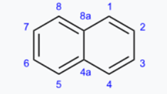
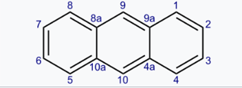
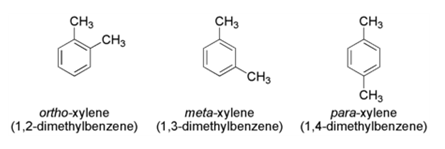
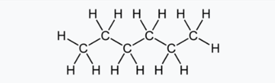
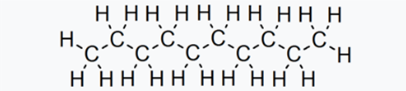
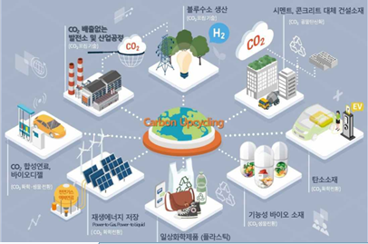

탄소 화합물의 구조적 아름다움:
수학으로 푸는 화학의 비밀
김이현
글의 목적:
이 글을 쓰게 된 이유는 탄소 원소가 만들 수 있는 분자의 다양성과 그 결합 형태에 따른 다양한 물질의 특성을 이해하고 설명하고자 했기 때문이다. 또한, 자세히 알게 됨으로써 다양한 산업 및 연구 과정에서 쓰일 수 있다는 것을 알리고 싶었기 때문이다. 탄소는 비금속 원소 중에서 고체 형태로 존재하며 결합력이 뛰어나 다양한 물질을 형성할 수 있는 독특한 성질을 가지고 있다. 이 글을 통해 벤젠, 나프탈렌, 안트라센 등 여러 탄소 화합물의 구조와 특성을 설명함으로써 탄소 화학의 흥미로운 세계를 탐구하고 알리고자 한다.
탄소( C )
금속 원소가 아닌 것 중에서 유일한 고체 형태로
결합력이 매우 뛰어나다. 결합하는 방식
에 따라 다양한 물질이 생성된다.
분자와 집합
집합을 이용하여 탄소 화합물의 구조와 원소 개수 구하기
benzene ( C6H6 )
벤젠은 화학식 C6H6를 갖는 탄화수소로 무색이며 달콤한 냄새가 나는 가연성 액체이다. 유기 화학 화합물이고 6개 탄소 원자로 구성되어 있고 정육각형 평면을 이루며 각 탄소에는 하나의 수소가 결합한다.
Naphthalene ( C10H8 )
프탈산 무수물의 합성 원료 또는 방충제로 사용된다.
나프탈렌은 벤젠 2개가 붙어있는 것과 같다. 그러나 탄소 원자가 12개가 아니라 10개이다.
집합을 이용해 계산해보면
n(AUB)= n(A) + n(B)- n(A∩B)
6+6-2=10

Anthracene ( C14H10 )
안트라센은 적색 염료 알리자린과 다른 염료의 생산에 사용된다.
안트라센은 벤젠 3개가 결합한 구조이다. 나프탈렌과 마찬가지의 방법으로 탄소 원자가 14개라는 것을 알 수 있다.
집합을 이용해 계산해보면
n( AUBUC )= n(A)+n(B)+n(C)-n(A∩B)-n(B∩C)
6+6+6-2-2=14

Toluene ( C6H5CH3 )
대표적인 유기 용매로 광범위하게 사용된다.
톨루엔이 만들어지는 경우의 수
벤젠+메틸기 하나= 톨루엔
톨루엔이 6가지 존재하는 것이 아닌 1가지만 존재한다.
다 같은 톨루엔이 생성되어서 어느 모서리에 결합해도
구별이 되지 않기 때문이다.
Xylene ( (CH3)2C6H4 )
인쇄, 고무, 가죽 산업에서 용매로서 사용된다.
자일렌이 만들어지는 경우의 수
벤젠에 메틸기가 2개 붙으면 자일렌이 된다.
톨루엔은 경우의 수가 하나였으나 자일렌은 3가지이다.
메틸기가 붙어있는 탄소 기준
바로 옆 탄소- 오쏘 자일렌
하나 건넌 탄소- 메타 자일렌
반대편- 파라 자일렌
원자의 수와 종류는 같으나 다른 물질이므로 녹는점과 밀도가 다르다.

Hexane (C6H14)
가장 일반적으로는 용매로서 사용되며, 특히 유기 화합물의 추출 및 정제 과정에서 활용된다. 또한 열전달 유체, 솔벤트, 페인트 및 코팅 제조 등에도 사용된다.
헥세인이 만들어지는 경우의 수
헥세인은 탄소를 3종류로 나눈다
바깥쪽(1,6번) 그 안쪽(2,5번)
가장 안쪽(3,4번) 그래서 메틸기를 붙일수 있는
경우의 수는 3가지, 2개를 붙일 수 있는 경우의
수는 3X3=9, 9가지이다.

Decane (C10H22)
페인트, 접착제, 세정제, 또한 연료와 윤활제로도 사용된다
데케인의 경우의 수
데케인에 메틸기 2개를 붙일 수 있는 경우의 수는
헥세인과 똑같은 방법으로 구한다.
데케인은 헥세인과 같이 같은 부분으로
여기는 탄소가 5부분이어서
메틸기 2개를
붙일 경우의 수는 5X5=25, 25가지이다.

탄소 화합물의 구조가 산업과 경제에 미치는 영향
플라스틱은 탄소 화합물로 이루어지는데 폐플라스틱 문제를 해결할 새로운 기술이 개발됐다. 열분해유를 미생물의 먹이로 정제해 고부가가치 원료로 바꾸는 방법인데, 이를 통해 온실가스도 줄이고 경제성도 높일 수 있게 되었다. 탄소 화합물의 구조와 특성을 활용해 화학적 공정과 생물학적 공정을 결합한 새로운 방식 개발로, 기존의 열분해유를 저급 연료 대신 미생물의 먹이로 활용하는 방법이다. 새로운 방식으로 고부가가치 원료(디카르복실산)를 생산하면서 원료 생산 비용이 기존 석유화학 방식 보다 최대 40% 절감될 것으로 예측된다. 기업 입장에서는 비용이 들지 않으면서도 친환경적으로 플라스틱을 생산할 수 있게 된다.
에너지, 산업 공정 등에서 배출되는 이산화탄소를 직접 또는 전환하여 잠재적 시장가치가 있는 제품으로 활용하는 기술을 탄소포집･활용 기술(CCU)이라고 한다. 이렇게 포집된 탄소의 활용도가 높아지면서 이산화탄소 포집･활용(CCU) 기술은 탄소제로 사회를 실현하기 위한 핵심 기술 중 하나로 주목받고 있다. 특히 이는 지속가능한 성장이라는 측면에서 고무적인 일이다. 기존 탄소 포집만으로는 경제성을 담보하기 어려워 민간 기업들의 적극적 참여를 이끌어 내기 힘들었던 반면, 탄소를 재활용해 유의미한 자원을 획득할 수 있다면 탄소활용이 경제시스템의 일부로서 자리 잡을 수 있기 때문이다.
탄소감축과 경제성이라는 두 마리 토끼를 잡기 위한 탄소 포집 및 활용 기술의 발전이 탄소포집과 활용기술이 환경과 경제 면에서 필수적이다.

소감:
주제에 대해서 탐구하고 이 글을 쓰면서 탄소의 결합 구조가 얼마나 다양하고 복잡하며, 이러한 구조가 각 물질의 물리적, 화학적 특성에 얼마나 큰 영향을 미치는지에 대한 놀라웠다.
또한, 집합을 이용해 원소 개수를 구하고, 경우의 수를 이용하여 분자 결합 방법의 경우의 수를 구하는 방법을 통해 복잡한 구조를 간단하게 분석할 수 있다는 점이 매우 흥미로웠다. 고등학교 1학년 때 배우는 수학 개념인 집합을 가지고 탄소 화합물의 구조를 알 수 있다는 것을 보고 화학과 수학은 정반대의 성질을 띠지는 않는다는 것을 알게 되었다. 탄소 화합물의 구조와 특성을 이해함으로써 우리는 다양한 산업 및 연구 분야에서 응용할 수 있을 것이라고 생각한다.